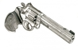

Présentation du groupe
Né d'un challenge pour un concert caritatif, le One Shot Band, comme le nom l'indique n'était destiné qu à une seule date. Après une création de pratiquement 5 inconnus, 2 répètes la semaine du concert, ils ont pris tellement de plaisir à jouer ensemble, et surtout un retour super positif du public que le groupe a décidé de continuer pour un 2ème shot. Une indisponibilité du guitariste de la 1ère formation nous a obligé à trouver un lead guitare pour une programmation, et en une seule répète, à l'unanimité nous avons souhaité qu'il soit notre guitariste définitif et que nous allions donner le meilleur de nous à ce groupe. 4 concerts à ce jour, de nouvelles reprises viennent s'ajouter régulièrement à notre répertoire et bientôt nous vous proposerons des compos. Le mot que l'on entend le plus souvent pour nous décrire : ENERGIE.
La LINE UP :
LIETHA NA : VOCALS : chanteuse du groupe JAIBREAKERS, 1000 REASONS, a participé au ROCKIN'1000 et chanté au STADE DE FRANCE devant 50 000 spectateurs. Ne vous fiez pas à sa douce apparence, son coffre en a scotché plus d'un.
ARNAUD : LEAD GUITAR , jeune guitariste inspiré par les plus grands, lead guitar dans les groupes SOUTHERN SPIRIT, BAD REFLEXION.Arnaud compose et décompose les RIFFS à tour de bras.
REMI CHIANEA : BASS, CHOEURS, également guitariste dans les AND THEN, ancien bassiste des Witches of Metal. Rémi est également un excellent guitariste, chanteur, compositeur.
LAHOUARI : DRUMS, Ex batteur du tribute PINK FLOYD VASARIAH, vraie machine de guerre au ryhtme les plus calmes comme les plus énergiques, la double n'est jamais au repos.
KA RYNH : RYTHM GUITAR, guitariste des 1000 reasons, ancienne guitariste des Witches of Metal. A participé avec LIETHA au ROCKIN'1000 en tant que guitariste. Les vidéos se retrouvent même sur le site officiel de QUEEN à plus d'un million de vues grâce aux 1038 musiciens présents.